This tutorial introduces Skyline's peak boundary imputation feature for DIA experiments. You will learn how to transfer peak boundaries from replicates where a peptide was confidently identified to replicates where it was not, enabling Skyline to integrate the chromatographic signal and produce measured peak areas. This is particularly valuable for group comparisons, where missing values can reduce statistical power or introduce bias depending on how they are handled.
Missing values are a common challenge in untargeted proteomics. In data-dependent acquisition (DDA), a peptide may be missing simply because it was not selected for MS/MS fragmentation in a particular run -- a stochastic sampling issue. Data-independent acquisition (DIA) eliminates this problem by fragmenting all precursors within each isolation window, but missing values still occur for two reasons. First, a peptide may produce detectable signal but fail to be confidently detected by the search engine due to factors like fragment ion interference, co-eluting peptides, or marginal abundance. Second, a peptide may be truly below the limit of detection in a specific replicate, producing no meaningful quantity to use for downstream quantitative analysis. Traditional approaches to handling missing values include removing high-missingness peptides from analysis, using statistical imputation methods to estimate missing quantities, or replacing missing values with zero or a small constant. Each approach has limitations: removal reduces statistical power, statistical imputation can introduce spurious correlations or dilute biological signal, and zero-substitution can exaggerate fold changes when comparing groups.
Skyline's peak boundary imputation takes a different approach: rather than imputing quantities, it imputes retention time boundaries. Skyline identifies an "exemplary replicate" -- the replicate with the best-scoring identification for a given peptide -- and transfers those peak boundaries to replicates where the search tool failed to detect the peptide. After retention time alignment, Skyline integrates the chromatographic signal within the imputed boundaries and performs background subtraction to obtain a measured quantity. When the peptide signal is present but was missed by the search tool, this recovers real data. When the peptide is below the limit of detection, this captures background signal, which still provides a more meaningful comparison than zero or a statistically imputed value. Harris et al. recently demonstrated that retention time boundary imputation produces more accurate quantitation than imputation methods that estimate missing quantities1.
This tutorial uses data from a study comparing extracellular vesicle-enriched plasma samples to total plasma using the Mag-Net enrichment protocol2. To start this tutorial, download the following ZIP file:
https://skyline.ms/tutorials/PeakBoundaryImputation-DIA.zip
Extract the files in it to a folder on your computer, like:
C:\Users\brendanx\Documents
This will create a new folder:
C:\Users\brendanx\Documents\PeakImputationDia
After Skyline opens the document it displays the Targets tree on the left. The peptide "FYNELTEILVR" is selected in the Targets tree. In the center, six chromatogram graphs are displayed. In the upper right corner is the Peak Area Relative Abundance graph and in the lower right corner is the Retention Times Replicate Comparison graph.
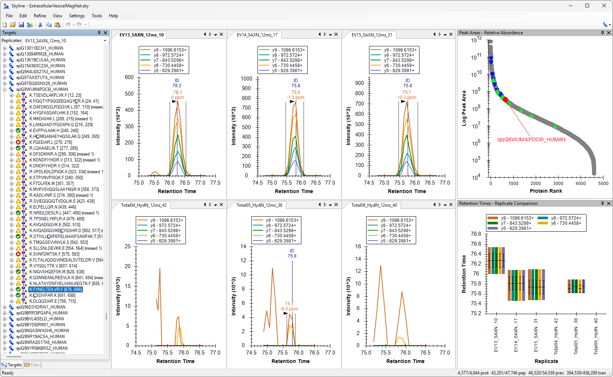
The "Peak Area - Relative Abundance" graph shows all the proteins in the document sorted by abundance. The formatting on this graph in this document has been customized so that points corresponding to extracellular vesicle (EV) proteins are displayed as green triangles, and abundant plasma proteins are displayed as blue inverted triangles. The replicates whose names begin with "Total" measured a sample of plasma with no enrichment, and you can see that the highlighted plasma proteins are higher abundance than the EV proteins.
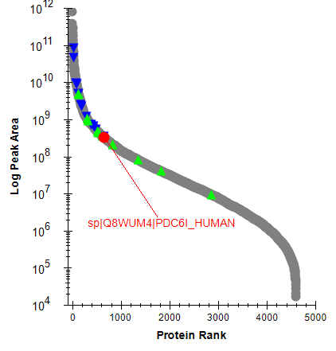
The replicates whose names begin with "EV" measured samples which used the MagNet protocol to enrich for EV proteins. The abundance of the EV proteins is increased in these samples.
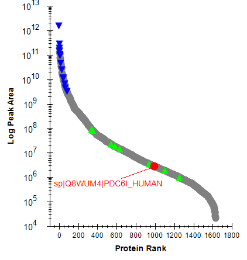
The abundances of the proteins in this total plasma sample are different from the EV enriched sample. Whereas the EV enriched sample had measurements for more than 4000 proteins, the total plasma sample has values for fewer than 2000 proteins. The abundant plasma proteins (blue triangles) have measured peak areas that are several orders of magnitude greater in the total sample compared to the EV enriched sample.
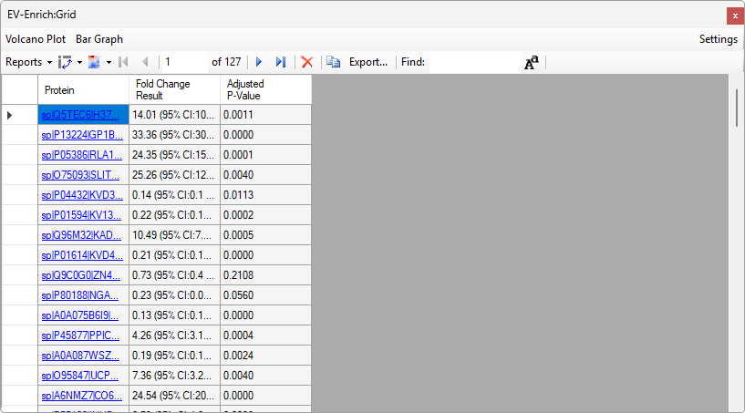
This displays the results of the "EV-Enrich" group comparison. The number of rows in the grid is much less than the total number of proteins in the document because the replicates where no peak was chosen for a peptide are excluded from that peptide's group comparison. By default, Skyline shows only a small number of columns in the grid with the group comparison results. This Skyline document included a report template which has more group comparison columns.
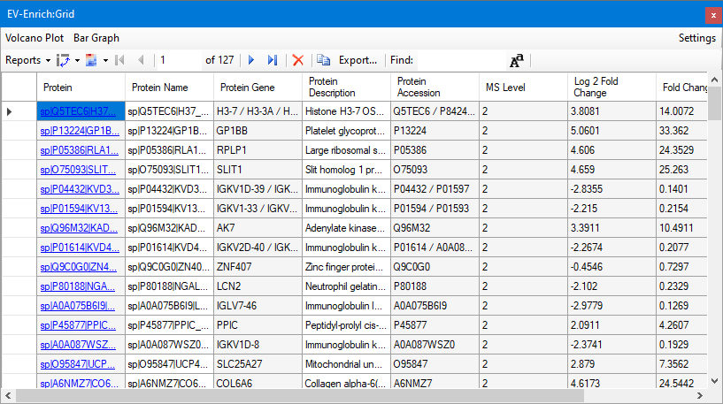
A more graphical way to see the group comparison results is in the volcano plot. To display the volcano plot, do the following:
The volcano plot appears in the right half of the space where the EV-Enrich grid was. You can make the window wider so that you can see all of the columns of the group comparison grid as well as the volcano plot.
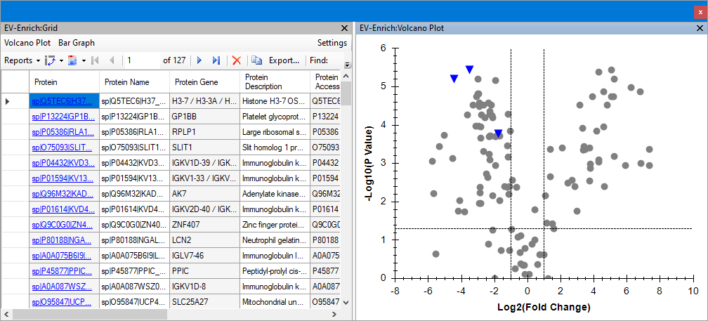
The missing proteins peaks are in replicates where the DIA-NN peptide search engine was unable to confidently identify a peak. In this case, a few of the most abundant plasma proteins, represented by blue inverted triangles, had a complete set of peptides detected across a sufficient number of replicates for Skyline to calculate proteins. None of the EV proteins, which would have been represented by green triangles, appear on the volcano plot. In general, the replicates with lower abundance will tend to be the ones where the peak was not confidently identified, but certainly not in all cases. You can modify the group comparison to tell Skyline to treat the replicates with missing peaks as if the peak had zero area.
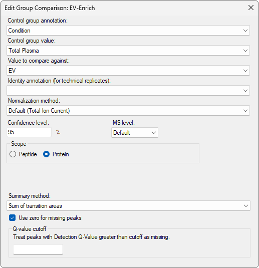
After you make that change to the group comparison definition, the grid will have one row for each protein in the document and the volcano plot will have more points.
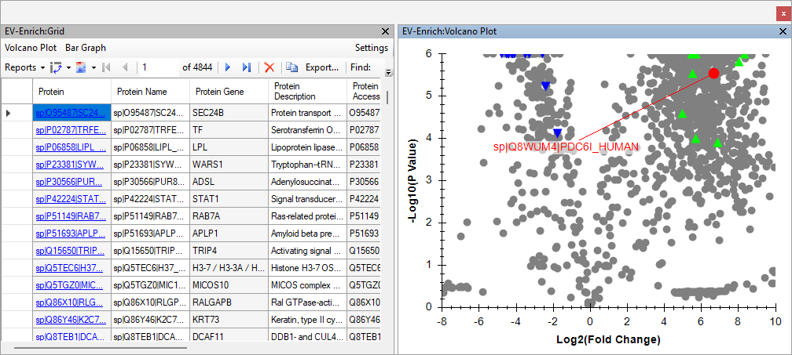
The volcano plot remains zoomed in on the subset of data that existed before the change to the group comparison settings. Closing and reopening the volcano plot will reset its display to the default amount of zoom for the data that is displaying.
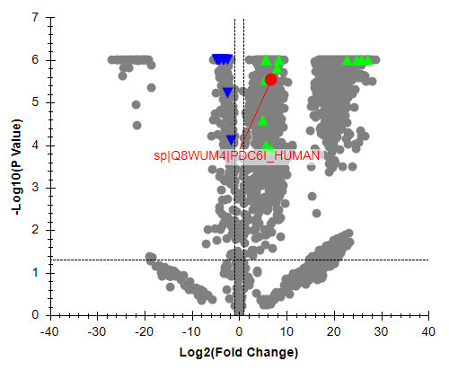
The currently selected peptide is still "FYNELTEILVR".
The "Retention Times - Replicate Comparison" graph in the lower right corner of the Skyline window shows retention times for the peptide across all six replicates. Some of the peptides were detected in all samples, but some were not detected in the unenriched "Total" samples, and do not have lines on the graph indicating the retention time of the chosen peak.
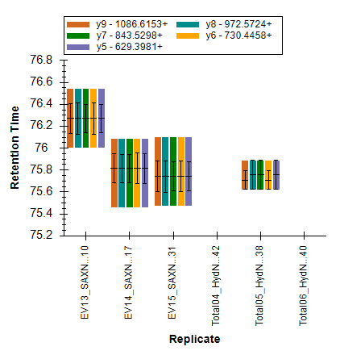
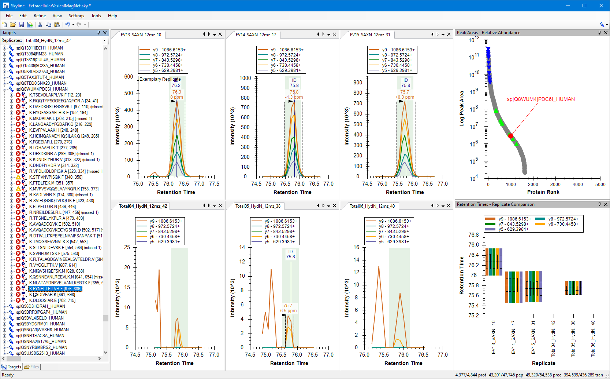
A green rectangle appears on each of the chromatogram graphs. This green rectangle shows where the peak boundaries from the best-scoring replicate would appear on the chromatogram after retention time alignment. In this document, Skyline did not do any peak detection, but, instead, used the peak boundaries from the spectral library which had been created from DIA-NN search results. In this case, the "best-scoring replicate" is the file where DIA-NN search results gave the identification the best score. For this particular peptide, the best-scoring file searched by DIA-NN was the first replicate, "EV13_SAXN_12mz_10". Skyline indicates this by displaying the words "Exemplary Replicate" on that chromatogram graph.
There are some peptides in this document where the peak imputation feature is not going to do as good a job as this one. In the Targets tree, there is another peptide "KADLVNR" which is sixteen peptides above the currently selected one.
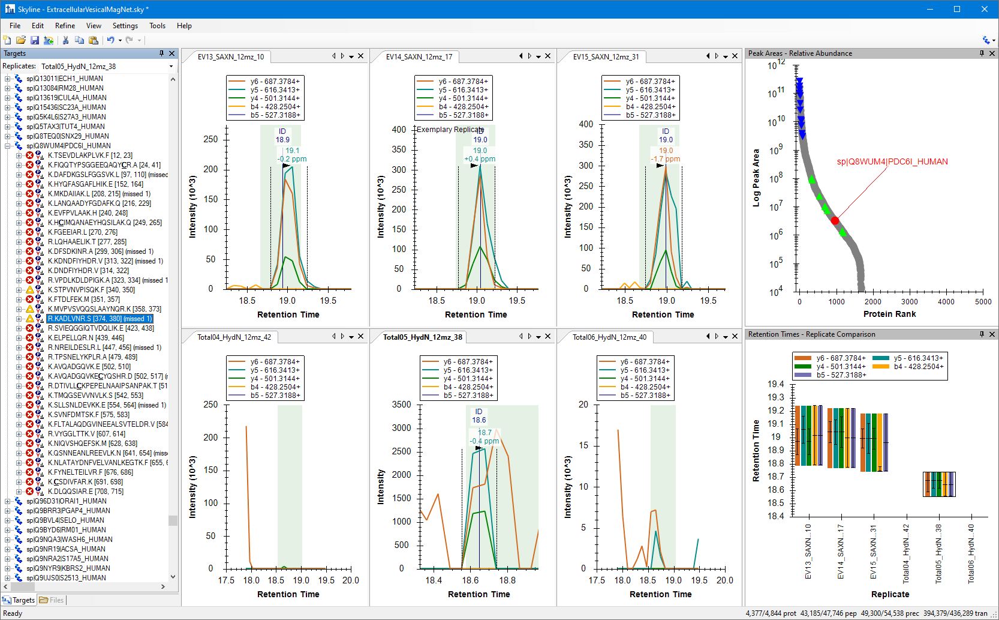
In the middle chromatogram in the second row, the green rectangle indicating where Skyline would have imputed boundaries does not line up with the peak boundaries that were chosen by DIA-NN. The "Score to Run Regression" graph in Skyline can be helpful for understanding why Skyline would do that.
The retention time regression window appears in the same place as the retention time replicate comparison window, on a different tab.
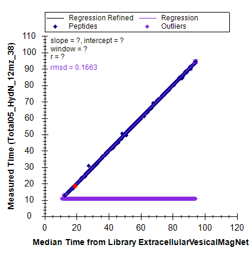
This graph shows all the peptides which can be found in the Skyline document or in the spectral library. The X-coordinate of each point is the median retention time for the peptide across all of the data files in the spectral library. The Y-coordinate is the retention time of the peptide in the currently selected replicate. The purple points plotted in a horizontal line across the bottom the chart area are the peptides which do not have a peak in the current replicate. The points are plotted there so that you can have something to click on to select peptides with missing peaks. It is hard to see exactly where the red dot is relative to the regression line which goes through all of the points. There is another view of this graph which makes it easier to see.
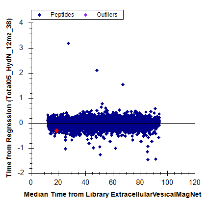
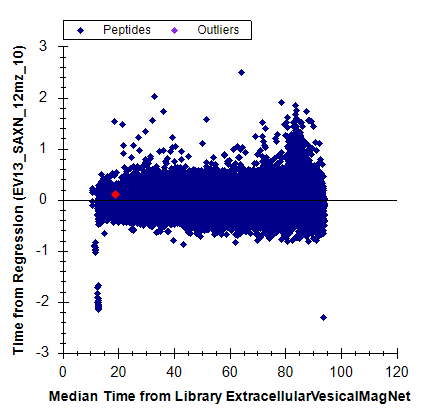
To return to what was displayed before:
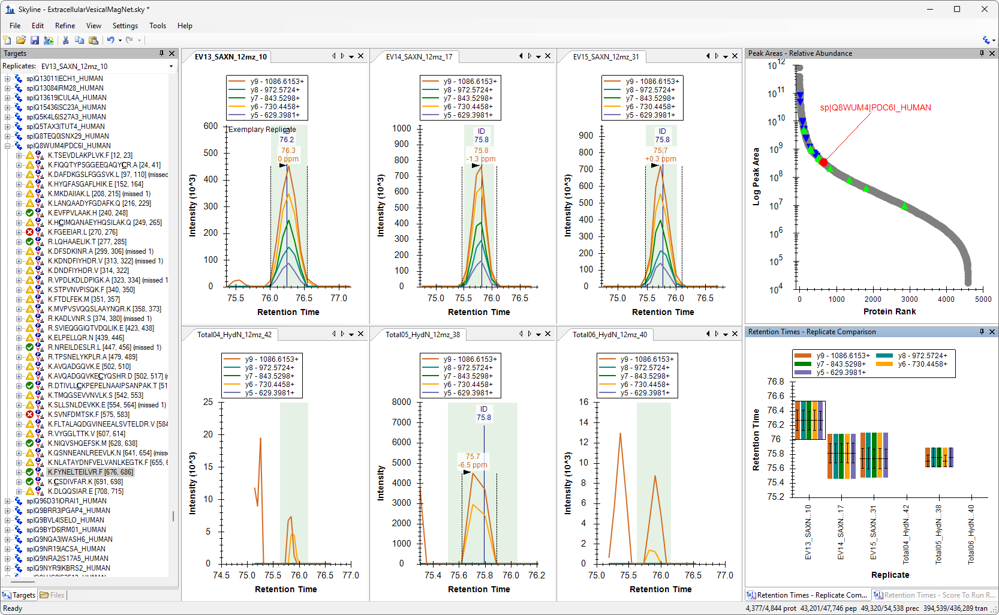
The following steps tell Skyline to set the peak boundaries for all missing peaks based on the peak boundaries of the best-scoring replicate.
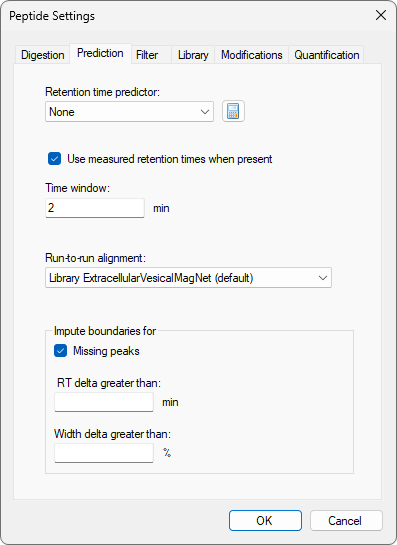
Skyline has now set the integration boundaries to coincide with the green rectangle in the replicates where the peak had been missing.
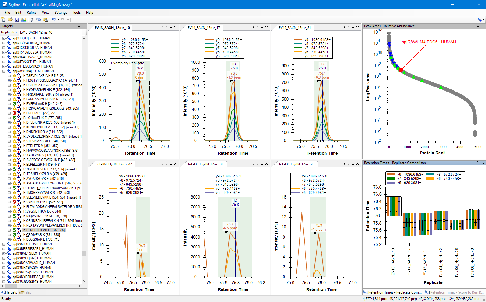
The fold change values are less extreme when the imputed peak areas are used instead of using zero for all missing peaks.
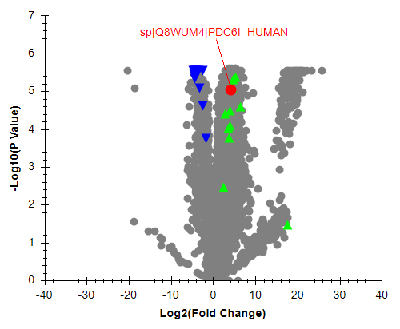
In this tutorial, you learned how to use Skyline's peak boundary imputation feature to address missing values in DIA experiments. You explored how missing peaks affect group comparisons, examined the "Use zero for missing peaks" option and its limitations, and saw how the exemplary replicate concept allows Skyline to transfer peak boundaries from high-confidence identifications to replicates where detection failed.
Peak boundary imputation provides measured quantities rather than statistical estimates, making it a valuable alternative to traditional missing value handling approaches. When signal is present but was missed by the search engine, imputation recovers real data. When signal is below the limit of detection, imputation captures background, which still produces more accurate fold change estimates than zero-substitution.
You also learned how to use the Score to Run Regression graph to understand retention time alignment and identify cases where imputation may not perform well due to peptides that deviate from the expected retention time relationship. This diagnostic capability helps you evaluate the quality of imputed boundaries in your own experiments.